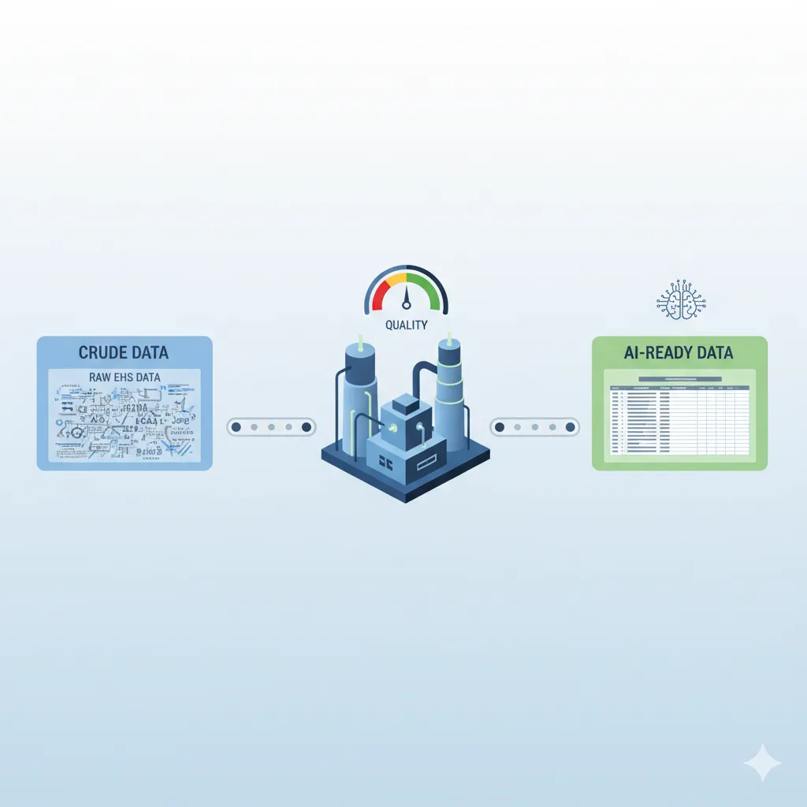

The EHS Data Refinery: From Crude Data to AI-Ready Intelligence
November 20, 2025
In our previous discussions on the AI Readiness Gap and the foundational role of interoperability, I introduced the concept of raw EHS data as "crude oil"—a substance with immense potential, but one that is messy, unstructured, and unusable in its natural state. An AI cannot learn from data filled with inconsistencies, subjective opinions, and undefined terms.
Attempting to run an AI on raw data yields "hallucinations"—incorrect predictions that erode trust and waste resources. It won't just fail; it will actively mislead you, identifying risks that don't exist while missing the ones that do.
The solution is not the software itself, but what you do with your data. Buying AI-enabled software only creates a container; the intelligence comes from the refinement process. This non-negotiable industrial process—The Refinery—is the critical EHS function for transforming raw data into a standardized, usable asset. This refinery process consists of three core components: governance, cleansing, and labeling.
1. Data Governance: Digital 5S for Your Database
Data governance is a term that causes many leaders to tune out, imagining endless meetings and binders of rules.
To make this practical, we need to reframe it. Think of governance not as IT bureaucracy, but as Digital 5S. Just as you wouldn't tolerate a cluttered, unsafe shop floor where tools are missing or mislabeled, you cannot tolerate a cluttered, unsafe dataset.
- Sort: Identify and deprecate free-text fields in your data collection forms that create ambiguity.
- Set in Order: Organize data into a logical EHS Taxonomy.
- Standardize: Enforce consistency with mandatory, structured dropdowns.
The core of this Digital 5S approach is building an EHS Taxonomy—a rigid classification system designed to eliminate ambiguity. Its entire purpose is to ensure that when two people report the same event, they are forced to use the same language.
The most effective way to implement this taxonomy is to redesign your data collection forms: remove free-text fields wherever possible and replace them with mandatory, multi-level dropdown menus. This is the practical implementation of a standardized recording framework, a concept I've detailed in my guide to the ESAW methodology.
The Strategic Shift: Separating the Event from the Cause
Most legacy EHS reporting systems share the same fundamental flaw: they mix different types of data together. A frontline manager opens the incident form and sees one dropdown containing event types (Injury, Near Miss), severity levels (LTI, MTC, First Aid), and vague root cause categories (Personnel Factors) all jumbled together. This creates ambiguity and forces flawed decisions.
The Failure of the Legacy Form:
Here's what happens when you mix these categories: the rare, high-consequence events you actually want to predict (like a Laceration) get buried by the hundreds of low-consequence events (like Near Misses). In data science, this is called Class Imbalance, and it breaks AI models. The algorithm will optimize for the most common pattern (Near Miss) and completely ignore the rare but critical signal (LTI). You'll never find the pattern you're looking for. And it gets worse: fields like 'Description' and 'Immediate Cause' become unstructured text dumps where people mix what happened (the mechanical event) with why it happened (the systemic cause). The AI gets noise instead of structure.
The Solution: Implementing a Structured EHS Taxonomy
The fix isn't just a prettier form—it's implementing a structured EHS taxonomy based on proven frameworks like ESAW (European), OIICS (North American), or TOOCS (Australian). These frameworks force clarity and objectivity into your data.
- Clean Event Separation: Start by forcing a binary choice: Is this an Injury/Illness or a Near Miss? Once they choose, the form immediately routes them to the appropriate taxonomy. This keeps your high-volume leading indicators (Near Misses) separate from your high-consequence lagging indicators (Injuries), preventing the class imbalance problem that kills AI models.
- Focus on Objective Data: Guide the manager through objective data points defined by the framework. Enforce single-selection rules, keeping your categories clean and mutually exclusive. Here's the key: severity (LTI vs. First Aid) should never be a dropdown choice. Calculate it automatically based on objective fields like 'Days Away.' This forces the manager to describe the risk, not just label the result.
- The Crucial Separation: Capture the mechanical event in these structured fields, but move root cause analysis to a separate module or another systematic RCA tool. The context isn't lost; it's just moved to where it belongs, in a proper investigation workflow rather than a single text box.
This structured workflow isn't just better for AI—it's faster and easier for the people filling out the forms. It's a guided process where nobody's guessing anymore. When you build good data governance into your form design, people actually use it. And this separation between what happened and why it happened? That's what unlocks diagnostic analytics—the difference between simply recording incidents and actually understanding their root causes.
2. Data Cleansing: Engineering Your "Data Equity"
Governance (Section 1) ensures your future data is clean. But that only stops the bleeding. It does nothing about the massive "Data Debt" (years of poorly structured historical data) sitting in your database right now.
This is where Data Cleansing comes in. This isn't just about tidying up; it's about engineering equity from your existing data.
Your historical data is a strategic asset, but right now it's frozen in a state of disrepair. Data cleansing is how you standardize, repair, and curate that data at scale so you can actually use it to train AI models. You can't build a reliable model on a broken foundation.
Strategy 1: Standardization (Events, Assets, and Locations)
This is your most critical cleansing strategy because it answers two fundamental questions your AI needs to know: what is happening and where is it happening. Without this, your data is just a pile of isolated reports, useless for pattern recognition, and your predictive models will fail.
Part A: Standardizing Events (The "What")
The Problem: Your database contains "slip," "slipped on wet floor," "fall due to water," and "water hazard." An AI sees these as four different things. Ask it "How many slip/trip hazards did we have?" and it can't answer.
The Solution: Create a mapping file—a simple two-column spreadsheet. Column A lists the messy terms (e.g., "slipped on wet floor"). Column B has the clean, standardized term from your taxonomy (e.g., "Slip/Trip - Wet Surface"). Hand this to your IT team. They write a find-and-replace script, and what would've been a six-month manual cleanup becomes a ten-minute automated job.
Part B: Standardizing Assets & Locations (The "Where")
The Problem: One report says "Line 3," another says "L3-Conveyor," a third says "Conveyor, Line 3." The AI sees three different places and can't connect the dots. This is the biggest barrier to predictive modeling.
The Solution: Don't build your location list from scratch. This is where your Interoperability work pays off. Connect to the source of truth: pull the Master Asset List from your CMMS (Maintenance) or the Location Hierarchy from your operations system. Use that as your standardization dictionary.
Example Mapping File:
| Messy Term | Standardized ID |
|---|---|
| "Line 3" | L3-CONVEYOR |
| "L3" | L3-CONVEYOR |
| "Conveyor, Line 3" | L3-CONVEYOR |
| "Line 4" | L4-MIXER |
Once all variations map to the same ID (like `L3-CONVEYOR`), the AI can finally see the complete history of that asset across all your data:
- Observation: Unsafe Condition (Guarding) on `L3-CONVEYOR`
- Near Miss: Object fell from `L3-CONVEYOR`
- Incident: Hand Laceration on `L3-CONVEYOR`
Now you've given the AI the context it needs to find patterns. And because both EHS and Maintenance records are standardized to `L3-CONVEYOR`, you can ask high-value questions like: "How many of our 'Guarding' observations on this asset were followed by an 'Overdue PM' work order from the CMMS?" This is how you transform Safety Risk data into Asset Reliability intelligence—proving that EHS data is a leading indicator for maintenance failure and operational risk.
Strategy 2: Contextual Repair (Handling Missing Data)
After standardization, your next challenge is missing data. A single blank field (like a missing 'Department' or 'Location') can make an entire report useless for analysis, creating holes that break your models.
Don't guess at missing data. Repair it using context.
Remember the "Common Key" workshop from your interoperability work? This is where it pays off. You don't need to chase down a manager to fill in 'Department' or 'Tenure.' Just pull it from HR using the data bridge you already built. It's a simple query: the system asks the HR bridge "Who is Employee #7781?" and fills in the blanks automatically. This isn't just filling blanks. It's automated data repair that rescues thousands of records from the junk pile.
Strategy 3: Feature Selection (Excluding Bad Data)
This is the most critical, non-negotiable step in the entire refinery process. While the first two strategies are about improving data, this one is about protecting your models from bad data.
In data science, this is called Feature Selection. The concept is simple: deliberately exclude toxic, subjective, low-value fields from your analytical datasets.
A strong model is built on the right data, not the most data. Your job is to exclude the fields that will poison your results.
- The Problem: Most legacy EHS systems have a mandatory "Root Cause" field with blame-oriented options like "Personnel Factors," "Management System Issues," or "Physical Hazard/Equipment." This isn't data. It's a guess.
- The Danger: This isn't a passive problem. It's active sabotage against your AI program. It's the textbook definition of "Bias In, Bias Out." If you feed an AI thousands of reports where "Employee Error" is marked as the cause, you're training it to be a bad safety professional. It will learn your organization's flawed, blame-based logic and predict "operator error" every time, missing the systemic risks you need it to find.
- The Solution: Don't delete this data (you may need it for compliance or historical reports). Just quarantine it. Exclude that toxic "Root Cause" field from any analytical dataset you feed to your models. Be ruthless. It's better to build a model on 5 reliable, objective fields (like 'Event Type', 'Location', 'Asset', 'Activity') than to poison it with a 6th field that's fundamentally flawed. This is the test of whether you're serious about data-driven safety or just automating your existing biases.
- Quarantining "Other" Categories: Another common flaw is the "Other" category. While it seems harmless, "Other" is the digital equivalent of sweeping problems under the rug. If 10% of your records fall into "Other," your AI learns to ignore 10% of your unique organizational risk. During cleansing, manually review these records and map them to the most specific category in your taxonomy. Retire the "Other" bucket entirely.
3. The 'Data Labeling' Process: Adding Intelligence
With your data governed (Section 1) and your historical records cleansed (Section 2), your foundation is solid. Now comes the final step: teaching your AI what to look for.
This is Data Labeling. It is the process where your EHS experts manually review a sample of unstructured data (like observation notes or inspection descriptions) and tag them with the standardized labels from your taxonomy.
The goal isn't just to predict accidents—it's to prescribe solutions. An AI that only predicts risk is just a fancy reporting tool. But an AI that learns which corrective actions actually work (and which ones fail) becomes a strategic asset. Data labeling is how you make that leap from prediction to prescription.
Don't focus only on incident reports. Your most valuable unstructured data is probably buried in safety observations, inspections, and risk assessments—your leading indicator data. This typically exists in two fields:
- The Hazard Description: What was seen? (e.g., "Guard was off on Line 3 conveyor.")
- The Recommended Action: What was done about it? (e.g., "Told operator to stop and replace guard," or "Work order submitted to fabricate new guard.")
You need to train the AI to understand both fields and learn the relationship between them.
Think of your labeled dataset as a textbook. You're creating a "gold standard" set of examples that shows the AI what to recognize. For instance: "When you see text like 'guard is missing,' classify that as 'Unsafe Condition: Guarding.' And when you see an action like 'install a hard-guard,' classify that as 'Engineering Control.'"
The Three Strategic Pillars of the Labeling Process
This labeling sprint is the first time your EHS experts and your AI actively collaborate. This is the practical "Human-in-the-Loop" (HITL) process discussed in Closing the AI Readiness Gap. You're not just tagging rows in a spreadsheet; you're codifying your organization's expertise into a format the machine can learn from.
1. Define the Scope and Taxonomies
Goal: Establish the boundary and language for the sprint.
Action: Assemble 3-5 Subject Matter Experts (SMEs) and define a dual taxonomy: one for classifying hazards (e.g., 'Unsafe Condition: Guarding') and another for classifying actions (e.g., 'Engineering Control' from the Hierarchy of Controls). Pull a random sample of 500 to 1,000 historical reports. Quality matters more than quantity here.
2. Execute the Consensus Sprint
Goal: Generate "gold standard" labels for the sample set.
Action: Have each SME independently label every report in the sample with both a Hazard and an Action classification. The most valuable part remains the disagreements. Bring the experts together to debate classification boundaries like "When an observation says 'operator removed guard to clear jam,' is this primarily a 'Machine Guarding' hazard or a 'Lockout/Tagout' failure?" These debates force your organization to define consistent classification rules. The AI learns from the consensus patterns that emerge.
3. Finalize the Strategic Asset
Goal: Create the deliverable for your technical team.
Action: Once consensus is reached, create a three-column spreadsheet: (1) the original observation text, (2) the agreed-upon Hazard Category label, and (3) the Action Category label. This simple file becomes the training data for your Natural Language Processing (NLP) model.
The Payoff
You've now trained an AI to do something valuable: read future observations and classify both the hazards and the actions. But here's the thing. Every EHS professional already knows that engineering controls are better than administrative controls. You don't need AI to tell you that.
The real value comes from pattern recognition at scale. The AI can prove which actions are failing. For example: "For 'Guarding' hazards, 90% of our actions are administrative controls like signage... and the data shows a 70% repeat-hazard rate at those exact locations within 60 days."
That's the insight you're after. The AI isn't reciting theory. It's providing a data-driven business case for investing in more effective (and often more expensive) engineering solutions by proving that the cheaper options aren't working.
The Refinery Is an EHS Discipline, Not a Project
Building your EHS Data Refinery is the most intensive part of becoming AI-ready, but it's also the most valuable.
This work—governance, cleansing, and labeling—creates value even before you run a single AI algorithm. Clean, standardized data gives you a reliable view of risk in your organization. That alone is worth the effort. It's also the only foundation that reliable predictive models can be built on.
Don't wait for AI software to arrive before starting this process. You can begin today with Excel and a team of SMEs. The organizations cleaning their data now will be the ones predicting injuries next year.